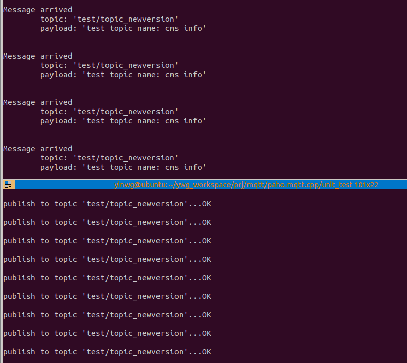

6.4.3.4. MQTT应用示例
6.4.3.4.1. MQTT Client库编译安装
Paho MQTT C++是Eclipse Paho MQTT客户端库的C++版本,源码编译安装步骤如下
安装依赖项
sudo apt-get install build-essential gcc make cmake cmake-gui cmake-curses-gui
#如果需要安全传输，则需要安装openssl
sudo apt-get install libssl-dev
在构建 C++ 库之前，首先构建并安装 Paho C 库
git clone https://github.com/eclipse/paho.mqtt.c.git
cd paho.mqtt.c
git checkout v1.3.8
cmake -Bbuild -H. -DPAHO_ENABLE_TESTING=OFF -DPAHO_BUILD_STATIC=OFF \
-DPAHO_WITH_SSL=OFF -DPAHO_HIGH_PERFORMANCE=ON -DCMAKE_INSTALL_PREFIX=./build/_install
sudo cmake --build build/ --target install
sudo ldconfig
备注
新版本的 C++ 库需要 Paho C v1.3.8 或更高版本。
编译Paho C++ library
git clone https://github.com/eclipse/paho.mqtt.cpp
cd paho.mqtt.cpp
cmake -Bbuild -H. -DPAHO_BUILD_STATIC=OFF -DPAHO_BUILD_DOCUMENTATION=OFF \
-DPAHO_BUILD_SAMPLES=OFF -DCMAKE_WITH_SSL=OFF -DCMAKE_PREFIX_PATH=./build/_install
cd build/
cmake ../
或
cmake -DCMAKE_CXX_COMPILER=aarch64-poky-linux-g++ ../
6.4.3.4.2. Paho library应用示例
6.4.3.4.2.1. publish
#include <iostream>
#include <cstring>
#include <cstdlib>
#include <unistd.h>
#include "mqtt/async_client.h"
//const std::string ADDRESS { "tcp://localhost:1883" };
const std::string ADDRESS { "tcp://broker.hivemq.com:1883" };
const std::string CLIENT_ID { "paho_cpp_async_publish" };
const std::string TOPIC { "test/topic_newversion" };
const int QOS = 1;
class callback : public virtual mqtt::callback
{
public:
virtual void connection_lost(const std::string& cause) override {
std::cout << "\nConnection lost" << std::endl;
if (!cause.empty())
std::cout << "\tcause: " << cause << std::endl;
}
virtual void message_arrived(mqtt::const_message_ptr msg) override {
std::cout << "\nMessage arrived" << std::endl;
std::cout << "\ttopic: '" << msg->get_topic() << "'" << std::endl;
std::cout << "\tpayload: '" << msg->to_string() << "'\n" << std::endl;
}
virtual void delivery_complete(mqtt::delivery_token_ptr token) override {
std::cout << "\nDelivery complete for token: "
<< (token ? token->get_message_id() : -1) << std::endl;
}
};
int main(int argc, char* argv[])
{
std::string test_topic = "test topic name: cms info";
mqtt::async_client client(ADDRESS, CLIENT_ID);
callback cb;
client.set_callback(cb);
mqtt::connect_options connOpts;
connOpts.set_keep_alive_interval(20);
connOpts.set_clean_session(true);
try {
std::cout << "Connecting to the MQTT server..." << std::flush;
client.connect(connOpts)->wait();
std::cout << "OK\n" << std::endl;
while (true) {
std::cout << "publish to topic '" << TOPIC << "'..." << std::flush;
client.publish(TOPIC, test_topic.c_str(), test_topic.length())->wait();
std::cout << "OK\n" << std::endl;
sleep(5);
}
std::cout << "Disconnecting from the MQTT server..." << std::flush;
client.disconnect()->wait();
std::cout << "OK" << std::endl;
}
catch (const mqtt::exception& exc) {
std::cerr << exc.what() << std::endl;
return EXIT_FAILURE;
}
return EXIT_SUCCESS;
}
6.4.3.4.2.2. subscribe
#include <iostream>
#include <cstring>
#include <cstdlib>
#include <unistd.h>
#include "mqtt/async_client.h"
//const std::string ADDRESS { "tcp://localhost:1883" };
const std::string ADDRESS { "tcp://broker.hivemq.com:1883" };
const std::string CLIENT_ID { "paho_cpp_async_subcribe" };
const std::string TOPIC { "test/topic_newversion" };
const int QOS = 1;
class callback : public virtual mqtt::callback
{
public:
virtual void connection_lost(const std::string& cause) override {
std::cout << "\nConnection lost" << std::endl;
if (!cause.empty())
std::cout << "\tcause: " << cause << std::endl;
}
virtual void message_arrived(mqtt::const_message_ptr msg) override {
std::cout << "\nMessage arrived" << std::endl;
std::cout << "\ttopic: '" << msg->get_topic() << "'" << std::endl;
std::cout << "\tpayload: '" << msg->to_string() << "'\n" << std::endl;
}
virtual void delivery_complete(mqtt::delivery_token_ptr token) override {
std::cout << "\nDelivery complete for token: "
<< (token ? token->get_message_id() : -1) << std::endl;
}
};
int main(int argc, char* argv[])
{
mqtt::async_client client(ADDRESS, CLIENT_ID);
callback cb;
client.set_callback(cb);
mqtt::connect_options connOpts;
connOpts.set_keep_alive_interval(20);
connOpts.set_clean_session(true);
try {
std::cout << "Connecting to the MQTT server..." << std::flush;
client.connect(connOpts)->wait();
std::cout << "OK\n" << std::endl;
std::cout << "Subscribing to topic '" << TOPIC << "'..." << std::flush;
client.subscribe(TOPIC, QOS)->wait();
std::cout << "OK\n" << std::endl;
while (true) {
sleep(1);
}
std::cout << "Disconnecting from the MQTT server..." << std::flush;
client.disconnect()->wait();
std::cout << "OK" << std::endl;
}
catch (const mqtt::exception& exc) {
std::cerr << exc.what() << std::endl;
return EXIT_FAILURE;
}
return EXIT_SUCCESS;
}
编译
g++ -o publish publish.cpp -lpaho-mqttpp3 -lpaho-mqtt3as -I../src/ -L../paho.mqtt.c/build/src -L../build/src
g++ -o subscribe subscribe.cpp -lpaho-mqttpp3 -lpaho-mqtt3as -I../src/ -L../paho.mqtt.c/build/src -L../build/src
运行状态

6.4.3.4.3. MQTT服务端(代理)编译
EMQ X是一款开源的，高性能，可扩展的分布式MQTT消息服务器，可以支持千万级的并发连接和百万级的消息推送．
6.4.3.4.3.1. EMQ依赖项安装
sudo apt update
sudo apt install software-properties-common apt-transport-https
wget -O- https://packages.erlang-solutions.com/ubuntu/erlang_solutions.asc | sudo apt-key add -
echo "deb https://packages.erlang-solutions.com/ubuntu focal contrib" | sudo tee /etc/apt/sources.list.d/erlang.list
sudo apt update
sudo apt install erlang
6.4.3.4.3.2. EMQ编译
git clone https://github.com/emqx/emqx.git
cd qmqx
make
make dist